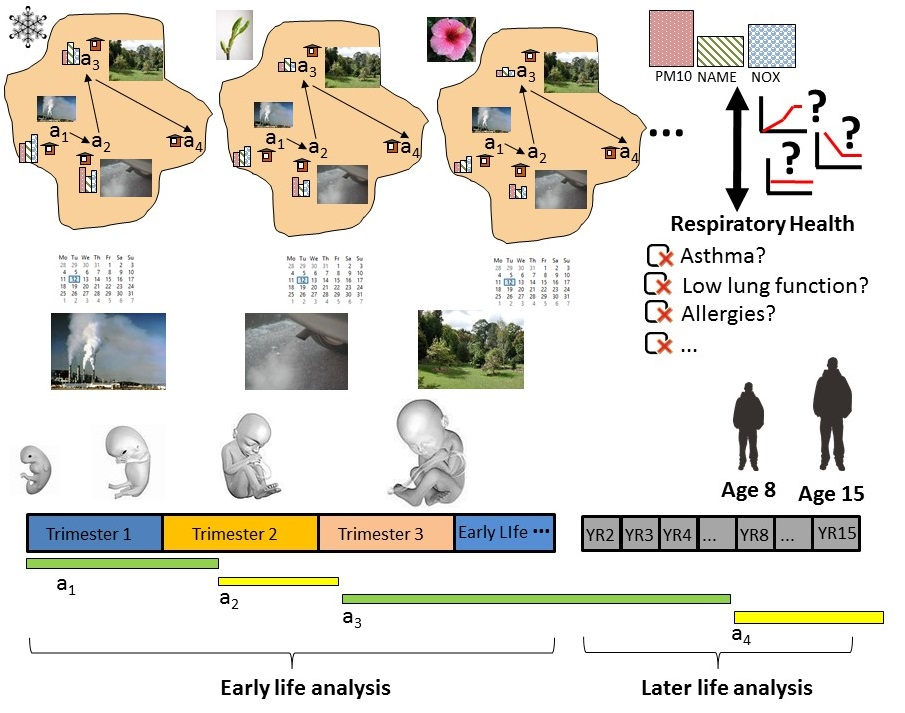

|
ALGAE is an automated protocol which can be used to assess historical exposures to
air pollution for members of longitudinal cohorts. It was developed as part of a
research project between Imperial College's Small Area Health
Statistics Unit (SAHSU) and the Avon Longitudinal Study
of Parents and Children (ALSPAC).
Although it was initially designed to support an exposure study that involved air pollutants and respiratory health outcomes, it was later made into a generic solution which could be adapted to support different life stages and pollutants. ALGAE is intended as a generic exposure study protocol that can generate reusable exposure data set that can be linked with various health outcomes. Please note that the exposure results and test cases have been developed to support the original SAHSU-ALSPAC study. However, it is very likely that other studies would want to change the life stages, the pollutants or the covariates to make the protocol work for them. Please see our sections on adapting the code. How to Cite and License ItThe ALGAE Protocol has been developed by Imperial College and is available under the GPL v3.0 open source license. We ask that if you use the software, please cite our paper, which was published in the Environmental Modelling and Software.
|
 |
The ALGAE ProtocolALorithms for Generating address histories and Exposures |

|